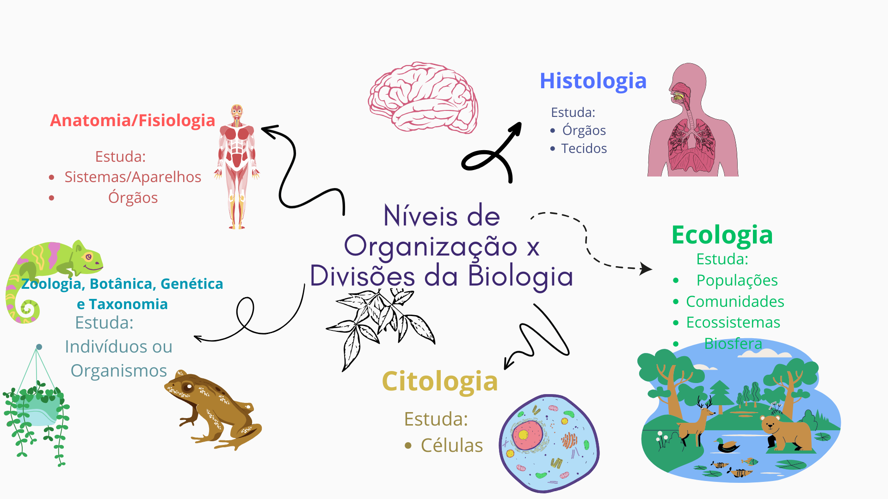
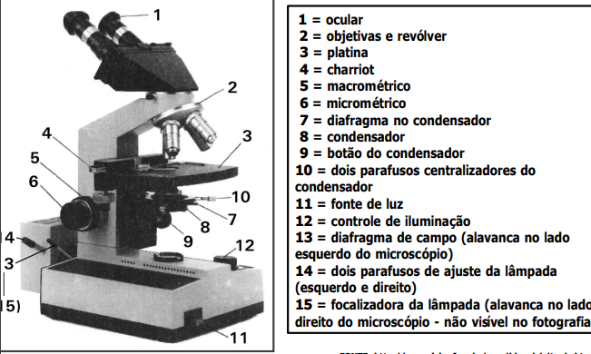

A quarta aula de biologia começou com a revisão da história da invenção do microscópio e da teoria celular. Após o resumo, grande maioria da aula foi focada na história do descobrimento da célula, a explicação dos diferentes tipos de células(procariontes e eucariontes), e a identificação da diferença entre as células eucariontes vegetais e animais. Ao final da aula vimos um pouco mais sobre a parede celular das bactérias e recebemos a atividade de pesquisar sobre o que é nanotecnologia e como ela pode ser útil na biologia.
Resumo do Dia:


A descoberta da célula
No século XVII, o cientista inglês Robert Hooke fez uma descoberta que mudaria para sempre nossa compreensão da vida: as células. Observando cortiça através de um microscópio rudimentar, Hooke viu pequenas estruturas que se assemelhavam a células de favos de mel. Essas estruturas foram chamadas de “células”. Posteriormente, a Teoria Celular foi desenvolvida por outros pesquisadores, como Matthias Schleiden e Theodor Schwann, afirmando que todos os seres vivos são formados por células (exceto o vírus). Graças a esses pesquisadores, o mundo das células foi revelado, abrindo caminho para a biologia moderna.
Primeiras descrições dos espermatozoides.
No século XVII, o comerciante Anton van Leeuwenhoek fez uma descoberta notável relacionada aos espermatozoides. Ele é amplamente reconhecido como o primeiro a observar essas células reprodutivas humanas. Utilizando um microscópio que ele mesmo criou, van Leeuwenhoek examinou o esperma e ficou surpreso ao ver os minúsculos “animais” se retorcendo. Ele descreveu essas células como pequenos seres. Suas observações foram publicadas pela prestigiosa Royal Society, gerando um novo campo de estudo sobre a biologia espermática. Van Leeuwenhoek também examinou espermatozoides de outros mamíferos e verificou sua presença nas trompas de Falópio e no útero das fêmeas. Essa descoberta pioneira abriu caminho para o entendimento mais profundo da reprodução humana e da biologia dos espermatozoides.
Tipos de Celulas
Células procariontes
As células procariontes, também conhecidas como protocélulas ou células procarióticas, são células que não possuem um núcleo celular definido. Diferentemente das células eucariontes, o material genético nas células procariontes fica disperso no citoplasma. Vamos explorar mais sobre a estrutura e características dessas células:
Estrutura da célula procarionte:
Cápsula: Reveste a célula externamente.
Citoplasma: Substância gelatinosa que mantém o formato da célula.
DNA: Carrega as informações genéticas da célula.
Flagelo: Permite a locomoção da célula.
Membrana plasmática: Controla a troca de substâncias com o meio externo.
Parede celular: confere forma à célula.
Pilus: Possibilita a fixação da bactéria ao meio.
Ribossomo: Estrutura responsável pela produção de proteínas.
Funções do microscópio

1 - Lente ocular